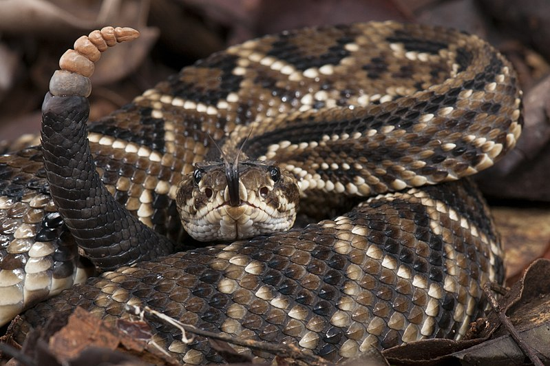

Cascavel (Crotalus durissus)
| Característica | Descrição |
|---|---|
| Nome Vulgar | Cascavel, boicininga, maracambóia |
| Tamanho | 1,5 metros (média) |
| Habitat | Campos abertos, Cerrado, Caatinga, plantações, pastagens |
| Alimentação | Pequenos mamíferos roedores |
| Sintomas de Envenenamento | Flacidez muscular, visão dupla, náuseas |
| peçonha | Sim,é uma cobra peçonhenta |